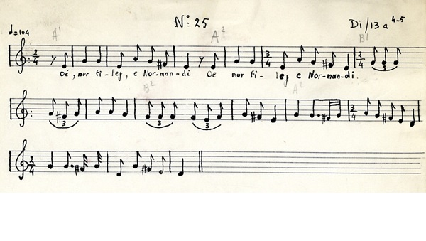
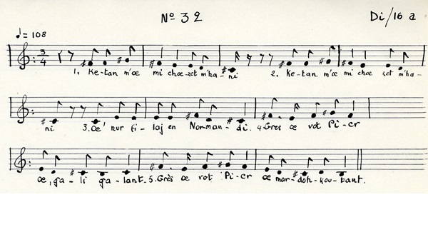
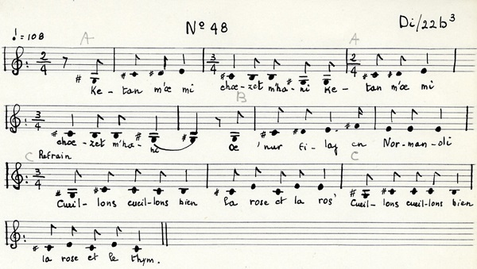
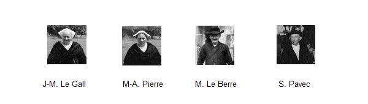

|
A propos de la mélodie Le site consacré à la "Mission Basse-Bretagne" ( cf. la note 5 des commentaires suivant le chant Ar Minour) donne 2 mélodies (et deux textes) pour ce chant, collectées en juillet 1939: - chant 25 (incipit "Ketan m'oe mi boe choeset/ Oe'n ur filaj e Normandi") et - chant 32 (incipit "Ketan m'oe mi choezet m'hanni/...) Selon le site, il s'agit - chant 25: d'une chanson à refrain, forme A A B1 B2 C1 C2, type 3², échelle ?, ton ?, type ?, césures symétriques, pause à la sus-tonique, résolution à la tonique. - chant 32: d'une "chanson dialoguée à refrain de la forme A1 A1 B A2 A3, type 4², échelle ?, ton ?, type avec 7ème degré évité, pause à la sus-tonique, résolution à la tonique. Les 2 fiches descriptives voient dans ces deux versions une "Chanson de marche pour s'en aller en cortège au village voisin" . Toutes deux ont été recueillies à Surzur (en Vannetais, entre Vannes et Muzillac). Il semble que ces deux mélodies illustrent le mode locrien. Enfin la Mission a recueilli une troisième version, chant N°48, très différente des deux autres, qui se chante sur un air très proche d'"An alarc'h". Le refrain est en français compréhensible ("Cueillons, cueillons bien..."). Forme A A B C C. Type 5². Césure asymétrique. Pause à la médiante. Résolution à la tonique. A propos du texte [1] Refrain La fiche du chant 32 dénombre 3 refrains pour ce chant connu "à Brandérion et Languidic (à l'est d'Hennebont), Theix (est de Vannes) et probablement une bonne partie du Vannetais". 1° Gres vat Pier, gali, galant / Gres vat Pier mard 'oc'h koutant 2° Dam, dam, la rinette / Allons bêcher [?], c'était plaisant 3° Cueillons, cueillons bien la rose, la rose / Cueillons, cueillons bien la rose et le thym. La première variante "sert de formule à trinquer dans la région de Theix et nous l'y avons recueillie incluse dans une chanson à boire." ("gres mat" signifie, entre autre, "à ta santé!") A ces 3 refrains, il convient donc d'en ajouter un 4ème, également mâtiné de français mal compris, collecté par la Villemarqué, entre 1840 et 1845 dans la même région que les chants de Chouans du 2ème carnet, à en juger par la place qu'il y occupe (p. 55), à savoir dans la région de Leuhan. Il n'est pas noté dans le dialecte de Vannes comme les chants 25 et 32, mais dans celui de Haute-Cornouaille: 4° Mon Dié digra, dansons difa l'amour, E!/ Mon Dié, l'amour à Jenefa. [2] Filerie Le texte "critique" (standard) relate les déconvenues d'un candidat au mariage. Il fait la rencontre, lors d'un "filage", d'une jeune fille modèle, une orpheline de père et de mère, qui lui demande de s'adresser à son tuteur. Celui-ci semble complètement dépassé par sa pupille, une paresseuse qui ne sort de son lit que lorsqu'il fait grand jour, pour aller aux fêtes ou à la rigueur aux vêpres. Il est vrai que, bien que la langue utilisée et les faits de société évoqués ("filage", "mineure"...) soient typiquement bretons, la rencontre est réputée avoir eu lieu en Normandie. L'honneur des Bretonnes est sauf! Un "filage" est décrit dans le dictionnaire du Père Grégoire de Rostrenen (1732) à l'article "filerie": "Venderie de fil, jour de divertissement et de bonne chère: Nezadeg, neadeg, vannetais "filaj", voyez "venderie" [cet article n'existe pas]. "Aller danser à la filerie chez.." Monet da zañsal d'an nezadeg da di... ou da ger..." [le texte noté La Villemarqué parle de "gerig"] |
About the tune. The website dedicated to the "Mission Basse-Bretagne" (see note 5 of the comments following the song Ar Minour) gives two melodies (and two sets of lyrics) for this song, collected in July 1939: - song 25 (incipit "Ketan m'oe mi boe choeset / Oe'n ur filaj e Normandi") and - song 32 (incipit "Ketan m'oe mi choezet m'hanni / ...) According to the site, this piece is - song 25: a chorus song with the following particulars: form A A B1 B2 - C1 C2, type: 3 ², scale: ?, tone: ?, symmetrical stanza pattern, suspension on subtonic, resolution on tonic. - song 32: a "chorus dialogue song in the form A1 A1 B A2 A3, type 4², scale ?, tone ?, Dorian chord scale with 7th degree avoided, suspension on subtonic, resolution on tonic. The 2 descriptive sheets describe these two versions as a "march song to go in procession to a wedding in a neighbouring village". Both were collected in Surzur (Vannes area, between Vannes and Muzillac). It seems that these two melodies are in the so-called Locrian mode. Finally the Mission has collected a third version, song No. 48, which is very different from the other two, namely an air very close to "An alarc'h". The chorus is an understandable French phrase ("Let us pick, let us pick ..."). It is the form A A B C C, type 5². asymmetric stanzas, suspension on mediant, resolution on tonic. About the text [1] Chorus The description sheet for song 32 lists 3 chorusses for this song which is widely spread "around Brandérion and Languidic (east of Hennebont), around Theix (east of Vannes) and probably in most of the larger Vannes area". 1 ° Gres vat Pier, gali, gallant / Gres vat Pier mar d'oc'h koutant. 2 ° Dam, dam, la rinette / A-hoing I will go [?], It was pleasant. 3 ° Let's pick, pick the rose, the rose / Pick, pick the rose and thyme. The first variant "serves as a toast in the Theix area and was collected as part of a drinking song." ("Gres mat" means, among other things, "Your health!") In addition to these 3 choruses we should henceforth mention a 4th chorus, also intertwined with hardly construable French words, which was collected by La Villemarqué between 1840 and 1845, in the same area as the Chouan songs of the 2nd notebook, as we may infer from its location on page 55, namely in the Leuhan or thereabout. It is not noted in the Vannes dialect as are songs 25 and 32, but in the of Upper- Cornouaille dialect: 4 ° Mon Dié digra, let's dance! let's love, Eh! / Mon Dié, let's love, Jenefa. [2] Thread selling dance party The "critical" (standard) lyrics relate the disappointment of a candidate for marriage. He met, during a "thread selling dance party" ("filage" or "filerie"), a perfect girl, an orphan of father and mother, who directed him to ask for her hand from her guardian. The latter seemed utterly overwhelmed by his ward, who appears to be a lazy girl who gets out of bed only when it is broad daylight, to go to parties, or to late church services as vespers. Although the language used and the particulars of social life mentioned ("filage", "minor" ...) are typically Breton, the encounter with the girl is supposed to have taken place in Normandy, so that the honour of Breton women is safe! A "filage" is described in the French-Breton Dictionary of Father Gregory of Rostrenen (1732), item "filerie", as follows: "Selling of threads, an entertainment and good food party: Nezadeg, neadeg, Vannes dialect" filaj ", see "venderie " [but this item is missing]. "To go dancing at the thread selling party .." Monet da zañsal d'an nezadeg da di ... or da ger ... " [The text recorded by La Villemarqué has the word "gerig"] |

DISKAN |
REFRAIN
|

DISKAN |
REFRAIN
|

Chant 25 : |
Chant 25 :
|
